Glyphs
Drawing a glyph to represent a multivariate observation entails mapping the values of variables onto visual features of the glyph. This is easy when the glyph is a simple geometric shape, as in Edgar Anderson’s (1957), use of circular glyphs with rays whose angles and lengths could represent numerous variables.
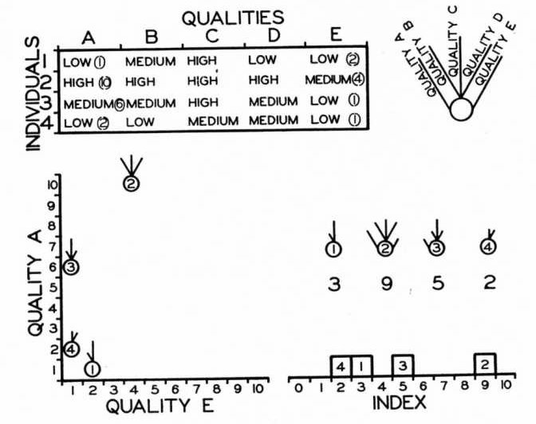
Illustration of Edgar Anderson’s (1957) glyphs for multivariate data.
A more interesting idea for glyphs due to Chernoff (1973) is to assign variables to features of a human face, such as the size and shape of eyes, ears, nose and hair, based on the values in a dataset. The assumption is that we can read people’s faces easily in real life, so we should be able to recognize small differences when they represent data. (fig-faces-yau?) shows this idea using data on rates of serious crime (murder, rape, aggravated assault, ..) in the US states. This figure comes from Nathan Yau’s How to visualize data with cartoonish faces ala Chernoff.
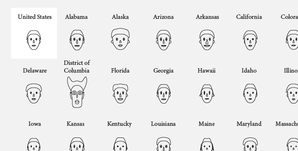
Chernoff-style faces example from Nathan Yau
This was drawn using the function aplpack::faces(). The
modern version also applies color to the eyes, hair, lips and ears;
however, these colors cannot be assigned to variables in the dataset. If
you call faces() without any data, it gives a demo using
three variables.
faces()
#> effect of variables:
#> modified item Var
#> "height of face " "Var1"
#> "width of face " "Var2"
#> "structure of face" "Var3"
#> "height of mouth " "Var1"
#> "width of mouth " "Var2"
#> "smiling " "Var3"
#> "height of eyes " "Var1"
#> "width of eyes " "Var2"
#> "height of hair " "Var3"
#> "width of hair " "Var1"
#> "style of hair " "Var2"
#> "height of nose " "Var3"
#> "width of nose " "Var1"
#> "width of ear " "Var2"
#> "height of ear " "Var3"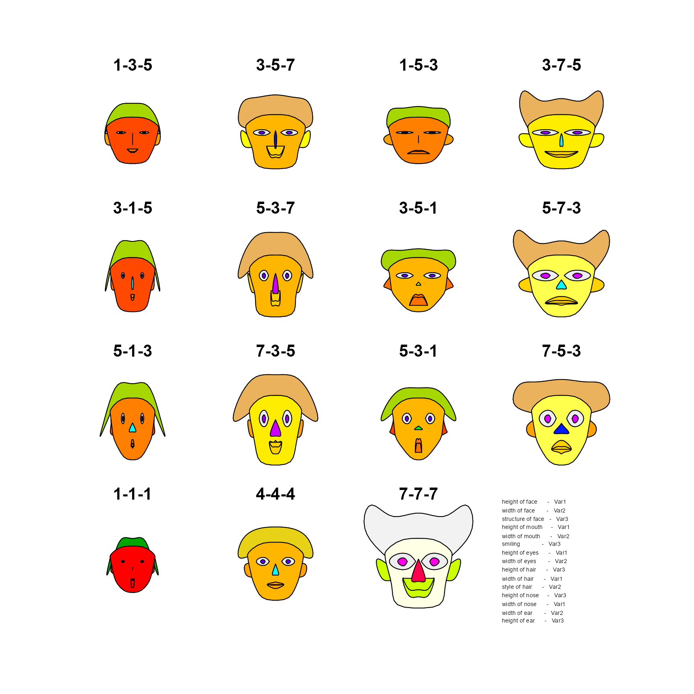
data(crime, package = "penguinglyphs")
str(crime)
#> 'data.frame': 52 obs. of 8 variables:
#> $ state : chr "United States" "Alabama" "Alaska" "Arizona" ...
#> $ murder : num 5.6 8.2 4.8 7.5 6.7 6.9 3.7 2.9 4.4 35.4 ...
#> $ forcible_rape : num 31.7 34.3 81.1 33.8 42.9 26 43.4 20 44.7 30.2 ...
#> $ robbery : num 140.7 141.4 80.9 144.4 91.1 ...
#> $ aggravated_assault : num 291 248 465 327 387 ...
#> $ burglary : num 727 954 622 948 1085 ...
#> $ larceny_theft : num 2286 2650 2599 2965 2711 ...
#> $ motor_vehicle_theft: num 417 288 391 924 262 ...The call to faces() draws the faces and prints a list of
the assignment of variables to visual features:
faces(crime[, 2:8],
labels = crime$state,
cex = 1)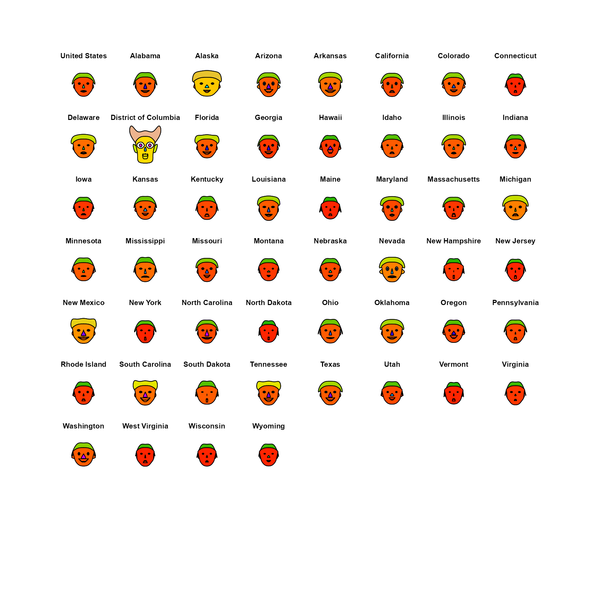
#> effect of variables:
#> modified item Var
#> "height of face " "murder"
#> "width of face " "forcible_rape"
#> "structure of face" "robbery"
#> "height of mouth " "aggravated_assault"
#> "width of mouth " "burglary"
#> "smiling " "larceny_theft"
#> "height of eyes " "motor_vehicle_theft"
#> "width of eyes " "murder"
#> "height of hair " "forcible_rape"
#> "width of hair " "robbery"
#> "style of hair " "aggravated_assault"
#> "height of nose " "burglary"
#> "width of nose " "larceny_theft"
#> "width of ear " "motor_vehicle_theft"
#> "height of ear " "murder"Penguin glyphs
Chernoff faces work, to the extent that they do, because we are practiced at reading faces. But the assignment of variables to facial features is arbitrary: nothing about a murder rate suggests the height of a face, and a different assignment can give a quite different impression of the same data.
The idea behind penguinglyphs is to try a glyph that is
a schematic picture of the thing that was measured. Here, the assignment
of variables to features is not arbitrary at all: a penguin with a long
bill is drawn as a penguin with a long bill.
Anatomy of a penguin
The glyph is assembled from a few simple shapes, drawn with
polygon() and segments(): an ellipse for the
body, with a smaller white one for the belly; a circle for the head; a
tapered quadrilateral for the bill; a square or circle for each eye;
quadrilaterals for the flippers; and a few line segments for the feet.
The four measurements in the penguins data each control the
size of one of these parts, and the two categorical variables control
color and shape.
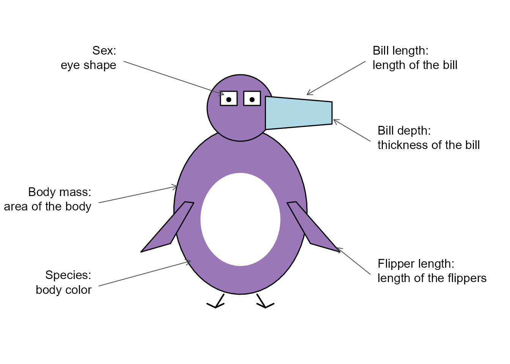
Anatomy of a penguin glyph: the visual features, and the variables they represent.
draw_penguin() draws one glyph, centered at a point
(x, y) in an existing plot. The size of each feature is
given by a scale factor, where 1 is a penguin of average build.
One feature at a time
Does each feature do its job? The simplest test is to vary one scale factor at a time, holding the others at 1. In the package, measurements are mapped to scale factors in the range 0.7 to 1.3, so each row of the figure below shows the smallest, the middle and the largest value of one variable.
features <- c("Bill length" = "bill_len_scale",
"Bill depth" = "bill_dep_scale",
"Flipper length" = "flipper_scale",
"Body mass" = "body_scale")
values <- c(0.7, 1, 1.3)
op <- par(mar = c(4, 8, 1, 1))
plot(1, type = "n", xlim = c(0.5, 3.5), ylim = c(4.5, 0.5),
axes = FALSE, xlab = "Scale factor", ylab = "")
axis(1, at = 1:3, labels = values, tick = FALSE)
axis(2, at = 1:4, labels = names(features), tick = FALSE, las = 1)
for (i in 1:4) {
for (j in 1:3) {
args <- list(x = j, y = i, size = 1.1)
args[[features[i]]] <- values[j]
do.call(draw_penguin, args)
}
}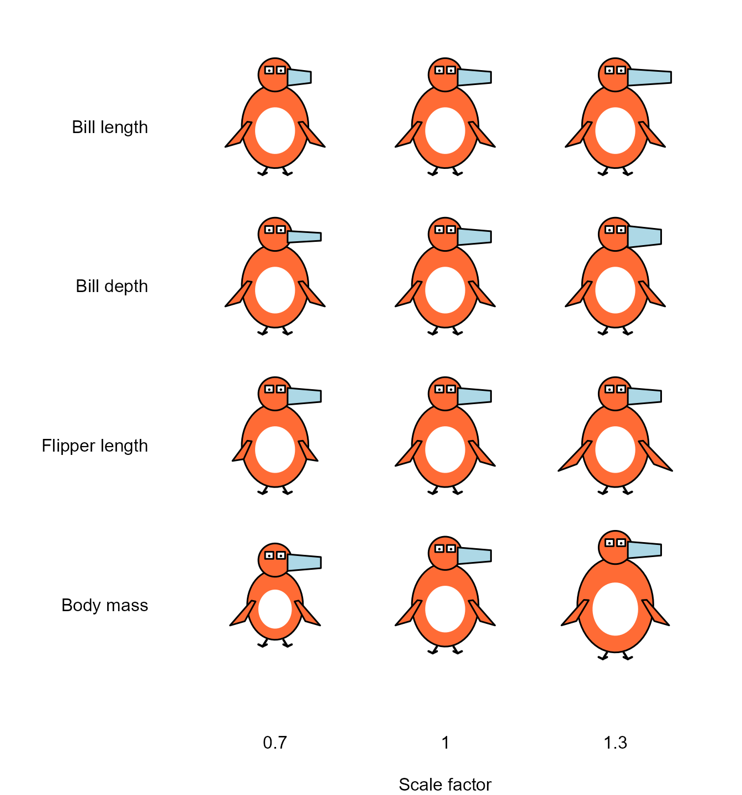
Each row varies one feature of the glyph over its range, with the others held constant.
par(op)Each feature does change visibly, and nothing else changes with it, but the features are not equally easy to read. Body mass is still the most conspicuous, even though it is shown by area. It also moves the head and the feet, because the head sits on top of the body. Flipper length is the weakest: the difference between the shortest and the longest flippers is clear when they are side by side, but it is not large. Bill length and bill depth are separate features, but they are parts of one shape, and in practice they are read together: a long, thin bill as opposed to a short, deep one.
The two categorical variables are shown by color and by the shape of the eyes.
species <- c("Adelie", "Chinstrap", "Gentoo")
sexes <- c("male", "female")
op <- par(mar = c(1, 6, 3, 1))
plot(1, type = "n", xlim = c(0.5, 3.5), ylim = c(2.5, 0.5),
axes = FALSE, xlab = "", ylab = "")
axis(3, at = 1:3, labels = species, tick = FALSE)
axis(2, at = 1:2, labels = sexes, tick = FALSE, las = 1)
for (i in 1:2) {
for (j in 1:3) {
draw_penguin(j, i, species = species[j], sex = sexes[i], size = 1.4)
}
}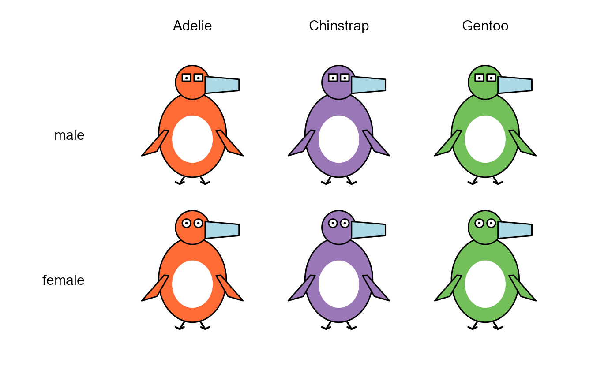
Species is shown by body color, and sex by the shape of the eyes.
par(op)Color is by far the stronger of the two. The difference between square and round eyes is easy to see at this size, but the eyes are the smallest part of the glyph, and the difference is hard to make out when the glyphs are drawn small, as they are in a scatterplot. This is probably the first thing to improve in the design.
Some design choices
A few decisions in the drawing matter for how the glyph is read.
Body mass is shown by the area of the body, not by its height and width. A penguin twice as heavy is not twice as tall. If the scale factor multiplied both the height and the width of the body, its area would vary as the square of the scale factor: over the range 0.7 to 1.3 that is a factor of , and the body would dominate the display. Instead, height and width are multiplied by the square root of the scale factor, so that area is proportional to it.
The head is the same size in every glyph. It serves as a fixed frame of reference against which the length and depth of the bill, and the shape of the eyes, can be judged.
Scale factors are limited to the range 0.7 to 1.3, so that differences are apparent but no glyph is grotesque. They are calculated from the range of each variable in the full
penguinsdata, rather than in the penguins being plotted. A given penguin therefore looks the same in any display.A glyph is sized in inches, like a plotting symbol, rather than in the units of the axes. It keeps its shape and size whatever the scales or aspect ratio of the plot, as the next figure shows. This is what allows the glyphs to be used as the points in a scatterplot, with
penguin_points().
op <- par(mfrow = c(1, 2), mar = c(4, 4, 1, 1))
plot(1, type = "n", xlim = c(0, 2), ylim = c(0, 2), xlab = "x", ylab = "y")
draw_penguin(1, 1, species = "Gentoo", size = 1.2)
plot(1, type = "n", xlim = c(170, 235), ylim = c(2500, 6500), xlab = "x", ylab = "y")
draw_penguin(200, 4500, species = "Gentoo", size = 1.2)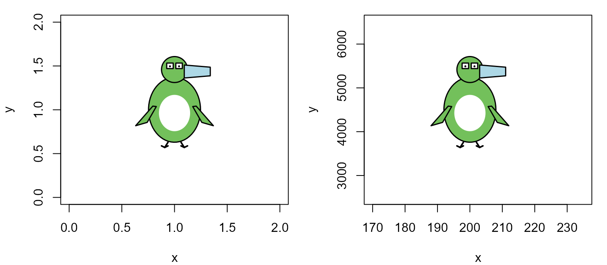
The same glyph in two plots whose axes have very different scales.
par(op)Missing values
What should be drawn for a penguin that was not completely measured? Drawing nothing hides the fact that the penguin exists, and drawing the missing feature at some default size is a quiet lie. Instead, a part of the glyph whose measurement is missing is drawn at the average size, but as an unfilled, dashed outline. If the sex of the penguin is not known, the eyes are just pupils, with no outline.
data(penguins, package = "datasets")
rows <- c(3, 4, 9, 10)
penguins[rows, ]
#> species island bill_len bill_dep flipper_len body_mass sex year
#> 3 Adelie Torgersen 40.3 18.0 195 3250 female 2007
#> 4 Adelie Torgersen NA NA NA NA <NA> 2007
#> 9 Adelie Torgersen 34.1 18.1 193 3475 <NA> 2007
#> 10 Adelie Torgersen 42.0 20.2 190 4250 <NA> 2007
penguin_glyphs(penguins[rows, ], ncol = 4, main = "")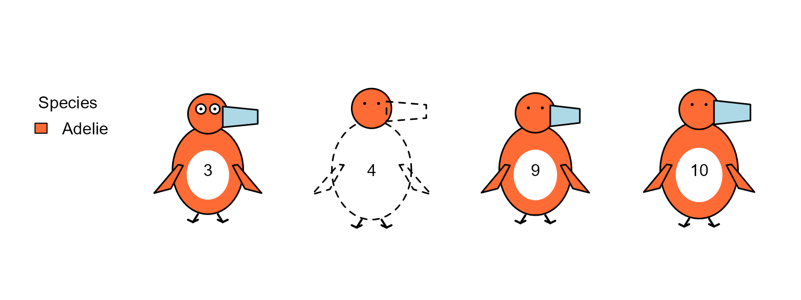
Glyphs for penguins with missing data. Penguin 4 has no measurements at all; the sex of penguins 9 and 10 was not recorded.
Penguins as faces
Finally, how do penguin glyphs compare with Chernoff faces for the same data? Here are the first five penguins of each species that have complete data, shown both ways.
peng <- na.omit(penguins)
rownames(peng) <- NULL
rows <- unlist(lapply(split(seq_len(nrow(peng)), peng$species), head, n = 5))
samp <- peng[rows, ]
samp[, 1:6]
#> species island bill_len bill_dep flipper_len body_mass
#> 1 Adelie Torgersen 39.1 18.7 181 3750
#> 2 Adelie Torgersen 39.5 17.4 186 3800
#> 3 Adelie Torgersen 40.3 18.0 195 3250
#> 4 Adelie Torgersen 36.7 19.3 193 3450
#> 5 Adelie Torgersen 39.3 20.6 190 3650
#> 266 Chinstrap Dream 46.5 17.9 192 3500
#> 267 Chinstrap Dream 50.0 19.5 196 3900
#> 268 Chinstrap Dream 51.3 19.2 193 3650
#> 269 Chinstrap Dream 45.4 18.7 188 3525
#> 270 Chinstrap Dream 52.7 19.8 197 3725
#> 147 Gentoo Biscoe 46.1 13.2 211 4500
#> 148 Gentoo Biscoe 50.0 16.3 230 5700
#> 149 Gentoo Biscoe 48.7 14.1 210 4450
#> 150 Gentoo Biscoe 50.0 15.2 218 5700
#> 151 Gentoo Biscoe 47.6 14.5 215 5400faces() has 15 facial features to assign, but there are
only four measurements, so each one is used for several features, as the
listing shows.
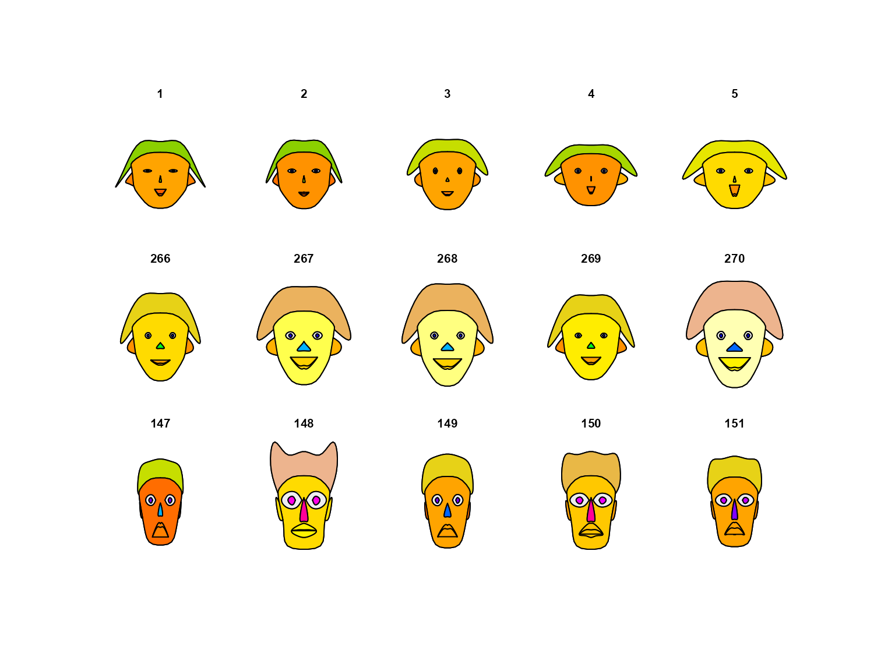
Chernoff faces for five penguins of each species. Rows are Adelie, Chinstrap and Gentoo.
#> effect of variables:
#> modified item Var
#> "height of face " "bill_len"
#> "width of face " "bill_dep"
#> "structure of face" "flipper_len"
#> "height of mouth " "body_mass"
#> "width of mouth " "bill_len"
#> "smiling " "bill_dep"
#> "height of eyes " "flipper_len"
#> "width of eyes " "body_mass"
#> "height of hair " "bill_len"
#> "width of hair " "bill_dep"
#> "style of hair " "flipper_len"
#> "height of nose " "body_mass"
#> "width of nose " "bill_len"
#> "width of ear " "bill_dep"
#> "height of ear " "flipper_len"
penguin_glyphs(samp, main = "")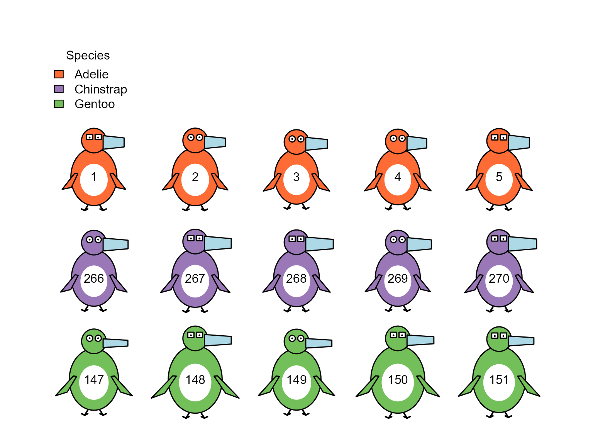
Penguin glyphs for the same five penguins of each species.
The faces do separate the species, even though faces()
was not told about species: the Gentoos in the bottom row have tall,
narrow faces unlike any of the others. But it is hard to say
what is different about a Gentoo without consulting the listing
of which variable went where, and several features of the face change
together because they all show the same variable.
In the penguin glyphs, species is given directly by color, and what
differs can be read from the drawing: the Gentoos have large bodies,
long flippers and thin bills, while the Chinstraps have longer bills
than the Adelies. The differences among the penguins of one species are
subtler than they are in the faces, and this is partly a matter of
scaling: faces() stretches each variable over the range in
the 15 penguins shown, while the glyphs use the range in the whole
dataset.
Whether a glyph that looks like its subject is actually read more accurately than a face is an empirical question. It could be tested with the “line-up” displays (Buja et al., 2009) described in the Introduction vignette.